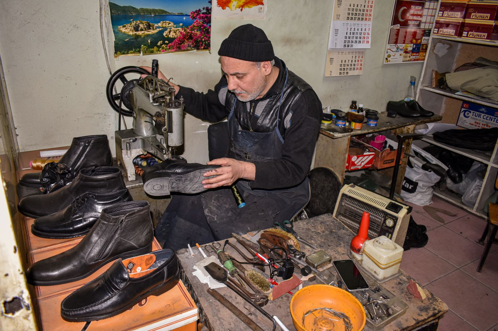

Shoe repair shop · 2418 Texas Ave B, College Station
Boots restored
by hand, by Tomas.
Tomas and Eva Gomez have spent nearly forty years working on shoes and boots in College Station. Bring in a pair that means something — they'll bring it back.
2418 Texas Ave B, College Station, TX 77840

Stock photo (Pexels, Mahmut Gögüs) — not Gomez Shoe Repair
Illustrative stock photo (Pexels, photographer Lantip) — not a photo of Gomez Shoe Repair, its shop, or its staff.
Craftsmanship
Real reviews call out the craftsmanship, specifically
Customers describe boots — including high-end brands like Lucchese — coming back looking new, with real reviewers highlighting attention to detail and finish. This isn't a quick patch-and-go; it's work done to be worn again.
Reflects the real review tags shown on Gomez Shoe Repair's Google Business Profile: "craftsmanship" (6), "boot repair" (5), "attention to detail" (2) — verified Sept. 21, 2026. Review text itself is internal research only; see the Reviews section below for the real rating.
About the shop
Meet Tomas & Eva Gomez
"I have known Sr Tomas Gomez and his wife Eva for almost 40 years... Sr Gomez worked with my dad's shoe repair shop in College Station."
That's from a real Google review — paraphrased here, not quoted verbatim as live page copy per our review-display policy (see Reviews below) — describing a nearly four-decade connection to shoe repair in College Station. Gomez Shoe Repair is run by Tomas and his wife Eva, a family operation with deep roots in this town.
Source: a Google review on Gomez Shoe Repair's public Business Profile (Teresa Shanks), read for internal research per client-demo-site policy, verified Sept. 21, 2026.
What we do
Boot & shoe repair, focused on the craft
The list below reflects the kind of work real reviews describe Gomez Shoe Repair doing — not a confirmed menu or price list. Call and ask about your specific pair.
-
01
Boot Restoration
Resoling, reconditioning, and rebuilding worn boots — including high-end leather boots.
-
02
Resoling & Heel Work
New soles and heels for shoes and boots that still have life left in them.
-
03
Stitching & Leather Repair
Hand-repaired seams, stitching, and leather damage.
-
04
Shoe Repair, General
Everyday shoe repairs for the College Station community.
Service list above is built from real review vocabulary, not a posted menu — confirm what Gomez can do with your pair by calling (979) 764-7750.
Customer reviews
Real reviews from real customers
Google reviews will appear here once connected. We'll display exactly what customers have said — nothing invented, nothing edited.
Google reviews will appear here once connected.
See us on GoogleAs shown on Gomez Shoe Repair's public Google Business Profile — verified Sept. 21, 2026.
Find us & hours
In Parkway Square, College Station
Find us
2418 Texas Ave B
College Station, TX 77840
(Parkway Square)
No independent website is listed for Gomez Shoe Repair — Facebook is the only real link on file, per the business brief and confirmed on its Google listing (verified Sept. 21, 2026).
Hours
Listing shows: Opens 8 AM Tue
Only "Opens 8 AM Tuesday" is published on the Google Business Profile as of Sept. 21, 2026 — the rest of the week is unconfirmed. Call ahead to be sure.
Bring your boots in
Call ahead or stop by Parkway Square. Nearly forty years of shoe and boot repair, done by hand.